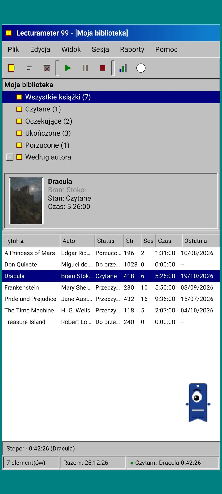
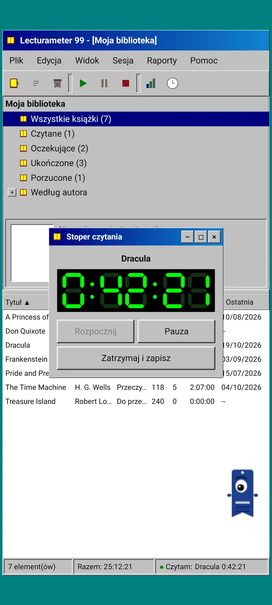
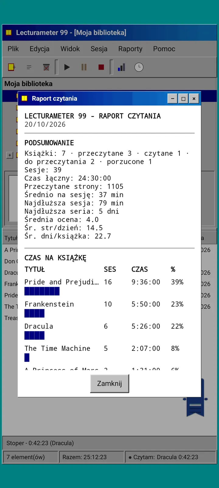
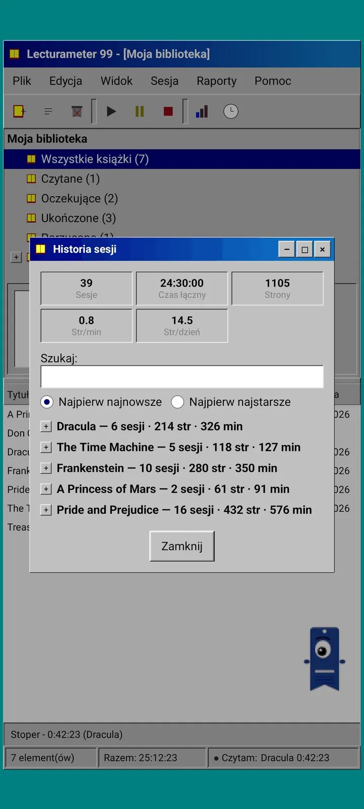
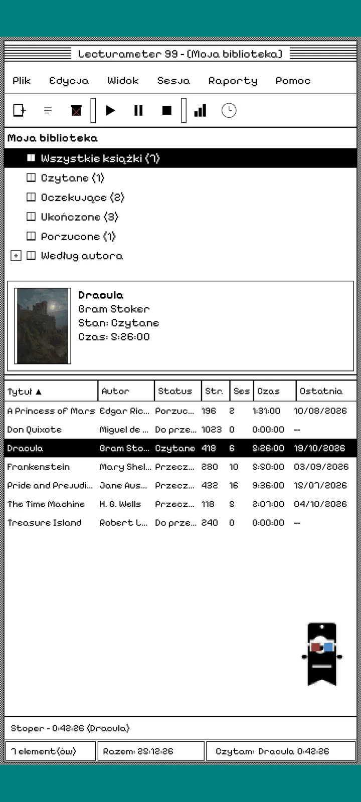
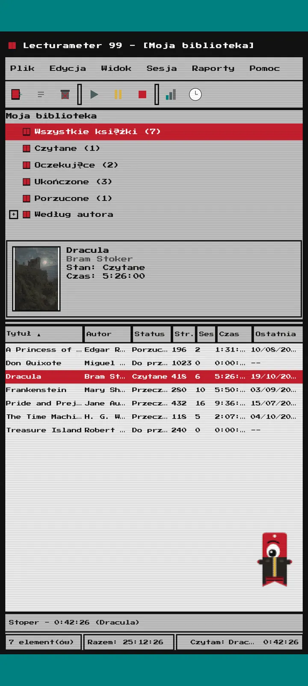
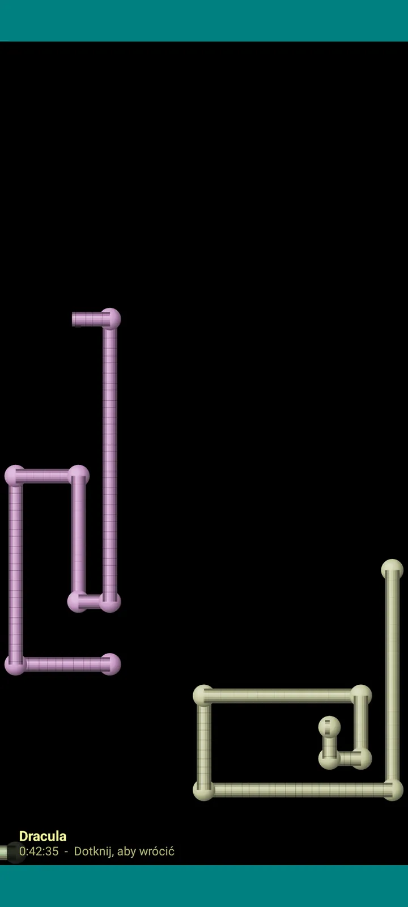

Lecturameter 1999
Lecturameter tak, jakbyś zainstalował go z płyty CD-ROM w 1999 roku. Alternatywny klient aplikacji, z oknami, menu i tabelami, który otwiera Twoje prawdziwe kopie zapasowe.

Czym jest
Program na pulpit z końca lat dziewięćdziesiątych, działający na Twoim telefonie. Jedno okno na morskim pulpicie, pasek menu, pasek narzędzi, drzewo folderów, gęsta tabela i pasek stanu.
- Drzewo biblioteki: wszystkie książki, czytane, oczekujące, przeczytane, porzucone i według autora
- Tabela z tytułem, autorem, statusem, stronami, sesjami, czasem i ostatnim czytaniem. Dotknij nagłówka kolumny, aby posortować
- Prawdziwe wyszukiwanie książek, w tym samym katalogu, którego używa Lecturameter
- Importuje i eksportuje kopię zapasową Lecturameter oraz CSV z Goodreads. Twoje dane wchodzą i wychodzą bez żadnych strat

Dlaczego istnieje
Eksperyment: zbudować pomysł Lecturameter od zera, przy radykalnie innych założeniach projektowych, nie ruszając prawdziwej aplikacji. Ze wszystkich reinterpretacji ta z 1999 roku podobała mi się najbardziej, więc dokończyłem ją jako zabawne ćwiczenie i zamieniłem w pełnego klienta. Jest celowo prostszy niż Lecturameter: to eksperyment i w zasadzie nie będzie dalej rozwijany.
- Stoper w pływającym oknie z zielonym wyświetlaczem LCD. Można go przesuwać, minimalizować do paska zadań, a licznik dalej chodzi na pasku stanu
- Gdy zatrzymasz stoper, okno zapisu sesji pyta o strony i wylicza Twoje tempo, tak jak w Lecturameter
- Zapisane sesje to sesje Lecturameter: wracają do nowoczesnej aplikacji, jeśli wyeksportujesz kopię zapasową Lecturameter 1999 i zaimportujesz ją w Lecturameter.

Raport z czytania
Statystyki to wydrukowany raport: podsumowanie, czas na książkę z paskami z bloków, prędkość w stronach na dzień, kalendarz roku narysowany znakami i ostatnie siedem dni.

Historia sesji
Sesje pogrupowane według książek w drzewie z plusem i minusem, a u góry pięć liczb: sesje, łączny czas, strony, strony na minutę i strony na dzień.

Zapisz sesję
Data, minuty, pierwsza i ostatnia strona, komentarz. Podsumowanie wylicza strony i tempo w trakcie pisania. Jeśli dojdziesz do ostatniej strony, zapyta, czy skończyłeś książkę.

Pagi 99
Pagi też podróżuje do 1999: spikselizowany i swobodnie chodzący po ekranie jak ówczesni asystenci w pakietach biurowych. Możesz go przeciągać, po dotknięciu mówi jedno zdanie, a wskazówki pokazuje w żółtych dymkach.
Motywy
Classic 98 jest darmowy i domyślny. Pakiet dodaje sześć kolejnych, każdy z własnym tłem i własnymi dźwiękami.

Wybierz go z menu Widok
Widok, Motyw... otwiera okno z siedmioma motywami. Zmiana obejmuje wszystkie okna, stoper i Pagi jednocześnie.
- Classic 98, darmowy i domyślny: szare okna, granatowe paski tytułu i morski pulpit
- Pakiet motywów: 1984, Gumdrop, Memory, Towers, Core i 8-bit
- Każdy motyw ma własne tło pulpitu i własne dźwięki dotknięć, okien i stopera
- Widok, Dźwięki motywu wyłącza dźwięki, jeśli czytasz w ciszy

Classic 98
Szare okna, granatowe paski tytułu i morski pulpit. Darmowy, z nim aplikacja się otwiera.

1984
Jednobitowy czarno-biały pulpit, ze wzorami z kropek i kwadratowymi oknami.

Gumdrop
Półprzezroczysty kolorowy plastik, zaokrąglone przyciski i paski w tle.

Memory
Menu konsoli na płyty z lat dziewięćdziesiątych, w ciemnych odcieniach błękitu.

Towers
Kolejna konsola na płyty z lat dziewięćdziesiątych, nocny błękit z jasnoniebieskimi liniami.

Core
Czarno-zielona konsola, jak ekran, który nigdy się nie wyłącza.

8-bit
Grube piksele, mało kolorów i kanciaste litery.

Wypróbuj przed zapłatą
Dotknij zablokowanego motywu, a cała aplikacja zmieni się na niego. Jeśli zamkniesz bez zakupu, wróci poprzedni motyw.
Wygaszacze ekranu
Pojawiają się tylko wtedy, gdy stoper działa, a Ty nie dotykasz telefonu. Czekają 1, 3 lub 5 minut albo wcale. Jedno dotknięcie wraca do aplikacji, a stoper dalej liczy.

Latające książki
Pikselowe książki machające okładkami po czarnym ekranie.

Pole liter
Litery z wielu alfabetów przepływające obok, jak pole gwiazd.

Rury ze stron
Rury zrobione ze stron, które rysują się same, aż wypełnią ekran.

Odbijający się Pagi
Pagi odbijający się od krawędzi ekranu.

Zegar czytania
Czas sesji wielkimi cyframi LCD.

Stroje dla Pagi
Osiem strojów dla Pagi 99. Wybierasz je w Widok, Strój Pagi... i możesz je przymierzyć przed zapłatą.
- Odtwarzacz kasetowy
- Czapka daszkiem do tyłu
- Okulary 3D
- Neonowe okulary przeciwsłoneczne
- Dyskietka w ręku
- Skórzana kurtka
- Kieszonkowy zwierzak
- Kartonowa korona
Sklep
Aplikacja jest darmowa i kompletna do zapisywania czytania. To, co można kupić, zmienia tylko wygląd.
Cała aplikacja, bez limitu czasu.
- Biblioteka, wyszukiwanie, stoper i sesje
- Raport z czytania i historia sesji
- Kopia zapasowa Lecturameter i CSV z Goodreads, import i eksport
- Motyw Classic 98 i Pagi 99
- Bez konta i bez reklam
Płatności jednorazowe, bez subskrypcji.
- Pakiet motywów, 3,49 €: 6 motywów z tłem i dźwiękami oraz wygaszacze ekranu
- Wygaszacze ekranu, 1,99 €: 5 wygaszaczy
- Stroje Pagi, 1,99 €: 8 strojów
- Całe 1999, 4,49 €: motywy, wygaszacze ekranu i stroje
Opcjonalne napiwki w menu Pomoc, jeśli chcesz postawić mi kawę.
Motywy i stroje można wypróbować na żywo przed zapłatą. Jeśli zamkniesz bez zakupu, wróci to, co miałeś.
Co się zmienia w porównaniu z Lecturameter
Tak samo jak w Lecturameter
- Te same dane: książki, sesje, statusy, oceny i notatki. Plik kopii zapasowej jest taki sam w obu aplikacjach.
- Wyszukiwanie książek po tytule lub autorze.
- Prawdziwy stoper: liczy dalej w tle, nawet gdy zamkniesz aplikację.
- Bez konta, bez reklam, bez połączenia, poza wyszukiwaniem książek.
- Te same języki co Lecturameter.
Tylko w edycji 1999
- Interfejs pulpitu z 1999 roku. Bez Material.
- Prawdziwe okna: przeciągasz je, minimalizujesz i zamykasz krzyżykiem.
- Raport z czytania w tekście, z kalendarzem narysowanym znakami.
- Menu kontekstowe po długim dotknięciu i skróty klawiszowe, jeśli podłączysz klawiaturę.
- Spikselizowany Pagi 99 z dymkami ze wskazówkami.
- Opcjonalne motywy z własnym tłem i dźwiękami, wygaszacze ekranu podczas działania stopera i stroje dla Pagi.
Co celowo pomija
- Bez Pro i bez subskrypcji. Zapisywanie czytania jest w całości darmowe, sklep sprzedaje tylko wygląd.
- Bez wyzwań, bingo, rocznego Wrapped ani widżetów.
- Bez sesji immersyjnej, dźwięków otoczenia ani kopii zapasowej na Google Drive. Kopia zapasowa zapisywana jest jako plik.
Zamknięte testy
Lecturameter 1999 jest w zamkniętych testach w Google Play. iOS pojawi się później, bez konkretnej daty.
- Dołącz do grupy groups.google.com/g/lecturameter-1999
- Zapisz się jako tester na play.google.com/apps/testing/com.lecturameter.r1999
- Zainstaluj ją z Google Play
W zamkniętych testach w Google Play, iOS później. Przeczytaj wpis na blogu , żeby zobaczyć, skąd się wzięła i czego się spodziewać.